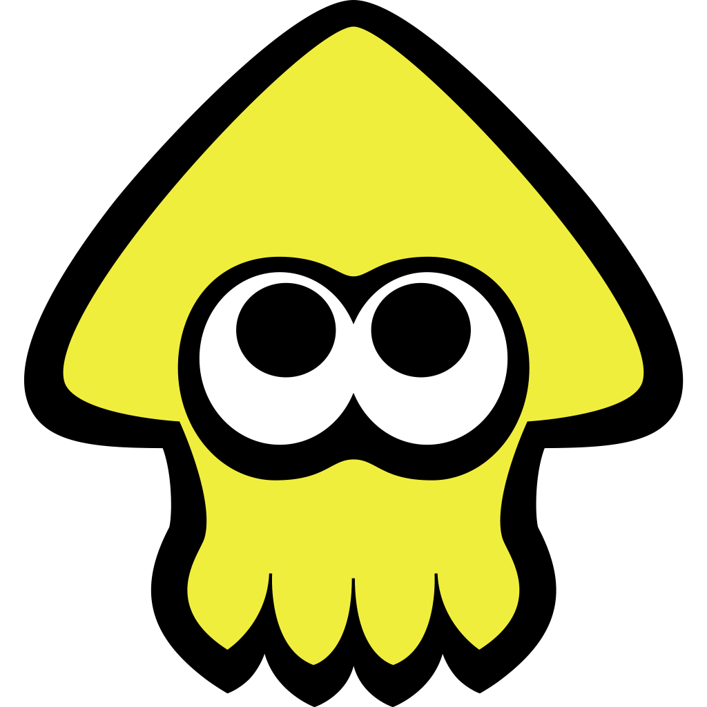

 Splatoon 3
Details
 |
|
| Playtime | 7m 12s |
| Last Activity | 4/30/2025 9:43:50 |
| Added | 4/29/2025 6:52:38 |
| Modified | 4/29/2025 23:28:39 |
| Completion Status | Played |
| Library | Playnite |
| Source | |
| Platform | Nintendo Switch |
| Release Date | 9/9/2022 |
| Community Score | |
| Critic Score | 83 |
| User Score | |
| Genre | third-person shooter |
| Developer | Nintendo EPD |
| Publisher | Nintendo |
| Feature | Multiplayer Single Player |
| Links | Wikipedia Official website |
| Tag | [People] artist: Seita Inoue [People] composer: Ryo Nagamatsu [People] composer: Sayako Doi [People] composer: Shiho Fujii [People] composer: Toru Minegishi [People] composer: Toshiyuki Sudo [People] composer: Yumi Takahashi [People] designer: Kenji Matsumoto [People] designer: Yoshihiko Ito [People] designer: Yoshiteru Fukuda [People] director: Seita Inoue [People] director: Shintaro Sato [People] producer: Hisashi Nogami [People] programmer: Seiichi Yamaguchi [People] programmer: Soichi Nakajima [People] programmer: Toshikazu Kiuchi |
Description
Splatoon 3 is a 2022 third-person shooter video game developed and published by Nintendo for the Nintendo Switch. It is the third game in the Splatoon series following Splatoon 2. Like its predecessors in the Splatoon series, the game consists of online multiplayer (player versus player and player versus environment) alongside a single-player campaign, both featuring combat based around ink-firing weapons.
The game was first revealed in a teaser trailer on 17 February 2021 and was subsequently released on 9 September 2022. The game received generally favorable reviews, with praise for its additional maps, single player campaign, customization options, and gameplay mechanics, but criticism for its matchmaking and disconnection issues and lack of new content. As of 31 March 2024, Splatoon 3 has sold 11.96 million copies worldwide (2.64 million copies in the first week alone), making it the fastest-selling game in the franchise and one of the best-selling Switch games.
Gameplay
Like its predecessors in the Splatoon series, Splatoon 3 is a third-person shooter. Players choose to be either an Inkling or Octoling as their player character. Both wield weaponry that uses colored ink as ammunition. Weapons are diverse in ability and imagery, with most resembling household objects. For example, Rollers are large paint rollers that can cover large amounts of area in ink but are generally limited to close-range combat, while Chargers are weapons which resemble a sniper rifle, and have long range for sniping opponents but are less effective at painting the ground. Splatoon 3 expands upon this by adding new main, sub, and special weapons to the game. Main weapons are chosen by the player, and include a sub weapon and a special weapon. sub weapons act as secondary weapons that use up more ink. special weapons require the player to cover the ground with a varying amount of ink in order to charge up their gauge to deploy a powerful effect. Inklings and Octolings have the ability to morph into a squid or octopus form, respectively. This form is referred to as the "swim form", and can be used to climb ink-covered walls or swim through ink faster than the humanoid forms can walk. Weapons have a finite amount of ink ammunition, and submerging in ink via the swim form replenishes it quicker than in humanoid form. All main weapons from Splatoon 2 returned in Splatoon 3, with the edition of 15 new ones
Modes
Competitive
Returning from its predecessors as a playable online multiplayer game mode is Regular Battle, known as Turf War. In Turf War, two teams of four players compete to cover the most amount of the map's area in their respective ink color for three minutes. Each team can cover over an area covered by the opponents ink with their own color. When walked on, the opposing team's ink slows movement, gradually deals damage and prevents the use of the player's swim form. Each player is equipped with a weapon set, chosen before each match, and each set comes with secondary and special weapons in addition to its main weapon. Secondary weapons provide alternative methods of attacking the other team and inking the ground; for example, Splat Bombs that explode a second after contact with the surface and Burst Bombs that explode upon impact. When enough ground is covered in a player's ink, they may use a special weapon, which are primarily used to attack the opposing team. Weapons and other forms of attack can deal damage to opposing players; when enough damage is given, they will "splat" their opponent, forcing them to restart from their starting location. Whichever team covers the largest portion of the field at the end of the match is declared the winner.
Once a player gains enough experience points to reach level 10, they gain access to a ranked mode called Anarchy Battles, featuring several different battle types. A game lasts for a maximum of five minutes plus overtime if certain conditions depending on the game mode are met. Clam Blitz is an invasion game with elements inspired by basketball and American football. The game mode sees players collect golden clams and deposit them in the opponent's goals. A Power Clam is needed to break open the opposing basket to score, which is created by collecting eight regular clams. The team who deposited the most clams by the end of the match or has depleted their remaining score to 0 is declared the winner. Splat Zones plays similarly to king of the hill; two teams aim to control one or two "splat zones" for a set amount of time. A zone is controlled when it is 70% covered in a teams ink, and if the map has two zones both must be controlled for the timer to count down. Tower Control functions similarly to Payload from Team Fortress 2, requiring a team to escort a moving tower. When the tower is controlled by one team, it moves toward that team's goal line, stopping to clear checkpoints along the way, with a team winning when the tower reaches their goal line or making it the furthest when time runs out. The Rainmaker game mode functions similarly to capture the flag, in which players attempt to carry a weapon called the Rainmaker from the center of the stage to various checkpoints until they reach the opponent's side of the map.
This game also sees the return of "Splatfests", where players choose to join one of three teams (compared to the two teams in the previous games) over a particular theme, and over three days they engage in matches to gain the most points for victory. In Splatoon 3, a new "Tricolor Turf War" mode can be played during the second half of a Splatfest, where one team of four players defends an "Ultra Signal" at the center of the map from two teams of two attacking players. When an attacking team takes control of the Ultra Signal, it will summon a "Sprinkler of Doom", which will automatically ink a portion of the map's area for that team.
Salmon Run Next Wave
The co-op player versus environment (PvE) mode Salmon Run returns, titled Salmon Run Next Wave. The main goal is to collect Golden Eggs, obtained by splatting special enemies known as "Boss Salmonids", and depositing them into the egg basket. Salmon Run Next Wave uses the same basic gameplay as it does in Splatoon 2, where the player, employed by Grizzco Industries, teams up with three other players to fight waves of enemies known as "Salmonids". If a player gets splatted, the game's version of getting killed, another player can revive them by shooting them with ink. If the quota for eggs is not met within the time limit or the entire team is wiped out, the shift ends. Each "shift" typically lasts three waves, though, in Next Wave, a fourth "Xtrawave" sometimes occurs, where players team up to defeat a King Salmonid. By successfully meeting the quota of golden eggs for all waves in a shift, the player can increase their rank within Grizzco. Next Wave adds the ability to throw golden eggs along with new enemies and new "Known Occurrence" events. Salmon Run is also no longer limited to certain times of day; players are able to access Salmon Run at any time, even during Splatfests. A new addition to Splatoon 3 is "Big Run", an event where Salmonids invade the city of Splatsville. Players defend Splatsville by fighting invading Salmonids on an online competitive map, instead of the unique stages typically used for Salmon Run. After a few days, the event ends and participating players receive a prize. This event occurs every few months. There is also another Salmon Run event called "Eggstra Work", where teams compete to get the most golden eggs in a predetermined shift consisting of 5 waves.
Tableturf Battle
A digital collectible card game based on Turf War in which players build a deck of collected cards. In Tableturf Battle, each card can be used to apply a pattern on a grid, and after a "special attack" is charged, it can be used to place a pattern overwriting the opponent's patterns.
Setting
The Splatoon games take place on a version of Earth set far in the future after the extinction of humanity and almost all mammal life, suggested to be due to climate change, where much of oceanic life has evolved to live on land. Splatoon 3 takes place five years after the events of Splatoon 2 in the Splatlands, a sun-scorched desert inhabited by battle-hardened Inklings and Octolings, and Splatsville, a city of chaos that seems to have developed rapidly since the last Splatfest, Chaos vs. Order. The game's design is themed around chaos due to the outcome of the last Splatfest.
The story mode of Splatoon 3, titled Return of the Mammalians, is set in a new location called Alterna, a large, snowy area littered with incomplete structures and hazardous Fuzzy Ooze, an ink-like substance mostly covered in brown fur, with a rocket at its center. It focuses on the reappearance of mammals, which have been long-extinct.
The Side Order DLC story is set in the Order Sector, a virtual reality based on the Inkopolis Square area from Splatoon 2, which has been drained of color.
Plot
Upon following the elderly squid Craig Cuttlefish into a crater covered with lethal Fuzzy Ooze, the player is recruited by Cuttlefish into the New Squidbeak Splatoon as Agent 3 along with their pet Salmonid Smallfry. Smallfry is able to eat and destroy some of the ooze, allowing passage further into the crater. They fight Octarian enemies mutated with fur, which Cuttlefish believes are responsible for once again stealing the Great Zapfish that powers Splatsville. At the crater's base, Octarian leader DJ Octavio accuses Cuttlefish of taking his Octarian warriors. After defeating Octavio, he denies taking the Zapfish despite having previously done so in the first two games. The ground breaks open, and Cuttlefish and Agent 3 fall into the remains of the underground city Alterna, which the fuzzy Octarians have turned into a base. In Alterna, Agent 3 meets Callie and Marie of the New Squidbeak Splatoon, as well as the Captain, the player protagonist of the first game, and realizes that Cuttlefish has gone missing. They are approached by the idol group Deep Cut, who are searching Alterna for treasure and believe the Squidbeak Splatoon is there for the same reason. Aided by an artificial intelligence named O.R.C.A., they explore the city in search of Cuttlefish, but are repeatedly led to signals from the members of Deep Cut and forced to fight them over the "treasure", which appears to be junk. It is revealed that Mr. Grizz, CEO of Grizzco and organizer of Salmon Run, has kidnapped Cuttlefish and is responsible for taking the Great Zapfish and Octarian army, proving Octavio's innocence. Mr. Grizz explains that he aims to restore mammal life to Earth by converting other life into mammals by using the Fuzzy Ooze.
After using the treasure to assemble a cutting device and reaching the rocket at the center of Alterna, Deep Cut confronts the Splatoon again and after being given the treasure for free (as the team no longer needs it), explain their intention to sell the treasure for charity, and team up with the Splatoon to defeat Mr. Grizz; they also become Marie's employees, to the latter's dismay. Eventually, they reach the top of the rocket where Cuttlefish is being held and find Mr. Grizz having "dehydrated" the former for his "essence", seemingly killing him. Mr. Grizz, who is a massive bear and one of the only remaining mammals, explains that the rocket is rigged to explode and cover the entire Earth in Fuzzy Ooze, reviving mammal life at the expense of all other life on the planet. The Captain rehydrates Cuttlefish with his tears as Mr. Grizz launches the rocket into space, and Deep Cut provides Agent 3 a lift onto it using their tamed eels and shark. Agent 3, with help from DJ Octavio and Smallfry, who transforms into a "Hugefry" form (resembling a giant coho salmon), defeats Mr. Grizz and destroys the rocket. Agent 3, Little Buddy, and Octavio return to Earth with the Great Zapfish, and Mr. Grizz is seen floating in space during the credits.
Development
Splatoon 3 was developed by Nintendo EPD, with additional work done by Monolith Soft, who also assisted in the development of previous Splatoon games, as well as SRD and Bandai Namco Studios Singapore & Malaysia. The game makes use of NLPN, Nintendo's in-house server system, which supports expanded lobby features and better matchmaking.
At E3 2019, after the announcement of Splatoon 2's final Splatfest, "Chaos vs. Order", Splatoon producer Hisashi Nogami stated that a third entry in the series was not in development. In an "Ask the Developer" interview on Nintendo's website, it was revealed that the direction of Splatoon 3's world was decided after Team Chaos won Splatoon 2's final Splatfest, with the developers planning for both outcomes before the Splatfest winner was decided. In a Splatoon 3 Direct on 10 August 2022, Nintendo confirmed that the game would receive two years worth of updates releasing every three months using a seasonal approach, which would feature the addition of more stages and weapons, as well as large-scale paid downloadable content (DLC).
Marketing and release
Splatoon 3 was announced with a teaser trailer in a Nintendo Direct on 17 February 2021. The trailer revealed items, weapons, abilities, and an apocalyptic design. More details were revealed later that year in September, including the name of Splatoon 3's single-player mode, Return of the Mammalians.
A trailer for Splatoon 3's co-op mode "Salmon Run" premiered in a Nintendo Direct on 9 February 2022. On 22 April, Nintendo uploaded a video to its YouTube channel showing gameplay of the "Turf War" game mode, as well as providing an exact release date of 9 September 2022. Additionally, Splatoon 2: Octo Expansion was announced to be included with the Expansion Pack tier of Nintendo Switch Online. In July, Nintendo announced a special edition Nintendo Switch OLED model themed on the game, with a release date of 26 August 2022. In addition, the company announced a Splatoon 3-themed Pro Controller and carrying case, which released alongside the game.
On 10 August 2022, Nintendo broadcast a Splatoon 3-focused Nintendo Direct, revealing the date for the game's Splatfest World Premiere, a limited time demo Splatfest. Nintendo announced that the game would have amiibo support, with several new figurines that can be used to take photos with the characters in-game and receive special gear items, similar to past Splatoon titles. It introduced three new "idol" characters known as Big Man, Shiver, and Frye, collectively referred to as "Deep Cut". Also announced in the Nintendo Direct, the game is set to receive both large-scale paid DLC and two years of support via free updates. On 25 August 2022, a Nintendo Treehouse Presentation was broadcast which showcased the single-player story mode and the multiplayer lobby, alongside weapons and multiplayer maps.
The pre-launch Splatfest World Premiere event was held on 27 and 28 August 2022 with a rock-paper-scissors theme, which Team Rock won in all regions. The game was released worldwide on 9 September 2022. In a trailer on 11 October 2022, it was announced that the Splatoon 3 amiibo would launch on 11 November. During Nintendo Live 2022 on 9 October, a Splatoon 3 concert was held starring Deep Cut.
In a Nintendo Direct released on 8 February 2023, two waves of DLC were announced, with the first wave including Inkopolis (the main hub from the first game) and the second wave including a new single player campaign called Side Order. This mode was later revealed to be a roguelite, and featured a new story with Agent Eight, the protagonist of Splatoon 2: Octo Expansion. Side Order was released on 22 February 2024.
On 16 September 2024, Nintendo announced that the game would no longer receive regular content updates, although patches and seasonal events would continue.
Reception
Critical reception
Splatoon 3 received "generally favorable" reviews according to review aggregator website Metacritic. IGN reviewer Brendan Graeber called the third installment's multiplayer "more than just a simple upgrade", citing its additional maps, weapons, bosses, and customization, as well as its revamped lobby system. However, he criticized the game's lack of a "huge addition" similar to Splatoon 2's Salmon Run. Reviewing the game's single-player mode, he appreciated the new take on the series' hub world, as well as the returning ideas from Splatoon 2's Octo Expansion. He praised the story mode's lore, as well as its characters, while lamenting the reuse of enemies from previous games. He also reviewed Tableturf Battle, calling it a "lackluster card game" that "consistently ends with a whimper instead of a bang". Destructoid's Chris Carter also praised how Return of the Mammalians interacted with the game's multiplayer modes, by both teaching the player important mechanics and rewarding them with useful items, as well as appreciating how the story mode was tailored for speedrunning.
Martin Robinson of Eurogamer criticized the lack of significant new content, saying that even the largest new additions are not something "that can be applauded too enthusiastically", and other features "basic [ones] you'd expect of a contemporary online multiplayer game". However, he called the Splatoon series "one of the most polished, playable and impeccably executed series" from Nintendo. He also compared the game's story mode to the Mario franchise, saying that while it evoked some of the best parts of Super Mario Sunshine, the abstract nature of the levels failed to meet the best Mario levels.
Kotaku's Patricia Hernandez lamented the amount of disconnections while matchmaking and playing online, saying that it is "inexcusable".
Brian Shea of Game Informer praised the larger amount of content available at launch compared to previous entries in the series, as well as how the game blended new and returning content, calling it the series "best entry to date". He also praised the game's movement, saying that "few games match the smooth, intuitive mobility Splatoon gives you while submerged and cruising through a map".
Wired's Reid McCarter praised the game's original, cartoony characters, as opposed to brand crossovers and realistic graphics.
On 12 September 2022, Nintendo reported that Splatoon 3 had sold 3.45 million copies domestically within the first three days of launch, becoming the fastest-selling video game of all time in Japan (surpassing the previous record holder Pokémon Black and White) at the time, as well as one of the best-selling games on the Nintendo Switch. Shares of Nintendo were noted to have increased by 5.5 percent on the Tuesday following the announcement, the largest increase since December 2020. Splatoon 3 debuted at the top spot on the UK boxed charts, where it remained for three weeks until being pushed to second place by FIFA 23. As of 18 October 2022, Splatoon 3 was reported to be the highest-selling video game of 2022 in Japan, just over one month after its release.